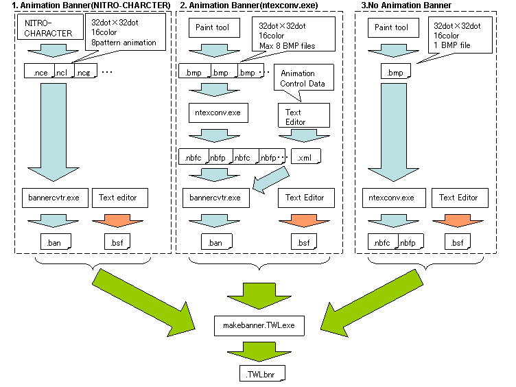

This is an overview of the banner files that are displayed at the launcher screen of the TWL or Nintendo DS/DS Lite systems.
TWL banners that are displayed on TWL systems are in the same format as NTR banners that are displayed on Nintendo DS/DS Lite systems, except that they add animation data. As a result, if a TWL banner is displayed on a Nintendo DS/DS Lite system or in DS Download Play, it appears as a static image just like an NTR banner. On TWL systems, however, animations are displayed for TWL banners.
For downloadable software (or "user NAND applications"), another type of banner called a "sub-banner" can be displayed. For more about sub-banners, see Sub-Banner Overview.
NTR banners and TWL banners have different formats, as shown below.
NTR Banners
| Banner Comment | Game Title for Each Language |
| Banner Icon Bitmap | One 32x32-pixel image |
| Color Palette for Banner Icon | 16-color, 1 set |
TWL Banners
| NTR Banners | Same as above |
| Bitmaps for Animation | Eight 32x32-pixel images |
| Color Palette for Animation | 16-color, 1 set |
| Animation Control Data | Managed by 64 data elements for controlling 1-255 frames |
TWL banners contain NTR banners. This internal NTR banner is displayed on a Nintendo DS/DS Lite system, and the animation is displayed on a TWL system.
There are three ways to create banner files. However, if you want to create banners specifically for Nintendo DS software (not TWL-enhanced or TWL-exclusive software), you should use the third method (ntexconv / static image).

For information on how to create cell animation data (*.nce) for TWL banners using NITRO-CHARACTER, see Banner Creation Procedure Using NITRO-CHARACTER.
Use bannercvtr to convert NCE files that were created using NITRO-CHARACTER.
To create the TWL banner, use makebanner.TWL to convert the data output by bannercvtr along with a BSF file that sets the banner comments.
Create up to eight 16-color 32x32-pixel bitmaps. Use ntexconv to convert these bitmaps. Create an XML file that lists the converted data and the content of the animation, and then convert this XML file with bannercvtr.
To create the TWL banner, use makebanner.TWL to convert the data output by bannercvtr along with a BSF file that sets the banner comments.
See bannercvtr for details about how to write the XML file.
Use this method to create NTR banners or TWL banners that are not animated.
Create a single 16-color 32x32-pixel bitmap. Convert the bitmap using ntexconv.
To create the banner file, use makebanner or makebanner.TWL (for Nintendo DS software and TWL-enhanced software, respectively) to convert both the data output by ntexconv and the BSF file that sets the banner comments.
Specify the banner you have created in a ROM Specification File (.rsf). The specified banner is set for the SRL file that was created by the makerom or makerom.TWL tool.
# ROM SPEC FILE Property { .... # # BANNER FILE: generated from Banner Spec File # BannerFile banner.bnr }
See makerom / makerom.TWL for details.
$TwlSDK/build/demos.TWL/tips/TWLBanner_anim1
$TwlSDK/build/demos.TWL/tips/TWLBanner_anim2
Creating NTR Banners
$TwlSDK/build/demos/tips/NTRBanner
Creating TWL Banners
$TwlSDK/build/demos.TWL/tips/TWLBanner_image
Both makebanner.TWL and makebanner check the banner's game title to ensure that characters can be displayed and that the character width stays within the display frame of the Nintendo DS, DS Lite, or DSi system. Specifications for the display of game titles are set forth in the programming guidelines. If a warning is displayed, be sure to correct the problem.
Banners can be checked without use of a card by using the addbanner tool.
However, this is supported only for displaying card applications. See the following procedures for displaying user NAND applications, which vary slightly. The following procedures do not use addbanner.
Burn the ROM on a flash card, insert the card into a Nintendo DS/DS Lite system, and check the banner display.
After running a ROM in IS-NITRO-DEBUGGER, you can also check it using Tools → Game Banner.
Burn the ROM on a flash card, insert the card into a TWL system or IS-TWL-DEBUGGER, and check the game title display.
Although a flash-card application cannot be started by a commercial TWL system, it is possible to check the banner.
Burn the ROM on a flash card, insert the card into a Nintendo DS/DS Lite system, and check the banner display.
Burn the ROM on a flash card, insert the card into a TWL system used for development or into IS-TWL-DEBUGGER hardware, and check the banner display.
The banner cannot be confirmed by inserting the card into a commercial TWL system.
Burn the ROM on a flash card, insert the card into a TWL system used for development or into IS-TWL-DEBUGGER hardware, and check the banner display.
The banner cannot be confirmed by inserting the card into a commercial TWL system.
Use TwlNmenu to import a TAD file to a TWL system used for development or to the IS-TWL-DEBUGGER hardware. Then check the banner display.
You can also check the banner display on the Software Management screen under System Settings.
Icons on the Software Management screen are displayed in the same way as they are by the launcher, but there are limits to the number of banner-comment characters that can be displayed.
Note that if the number of characters exceeds the limit, the excess is displayed as "...".
The following shows the number of characters that are displayed for banner comments in the DS and TWL launchers.
| DS Launcher | TWL Launcher | TWL Software Management Screen | |
|---|---|---|---|
| Width of Area | 140 px | 240 px | 202 px |
| Maximum number of W's | 23 | 17 | 16 |
| Maximum number of M's | 23 | 20 | 19 |
| Maximum number of w's | 23 | 20 | 19 |
| Maximum number of i's | 69 | 80 | 64 |
ntexconv
bannercvtr
makebanner.TWL
makebanner
addbanner
Sub-Banner Overview
Miscellaneous Sample Demos: Tips
Banner Creation Procedure Using NITRO-CHARACTER
2009/03/27 Revised a figure. Fixed typos and removed parts with old content.
2009/03/10 Revised information on the color palette for TWL banners and explained how to check the banner using IS-NITRO-DEBUGGER.
2008/11/28 Moved Using NITRO-CHARACTER to another page.
2008/11/11 Made revisions in accordance with addbanner TWL support.
2008/10/20 Changed the maximum number of characters. Added confirmation methods.
2008/09/29 Added a build sample.
2008/09/26 Added information about the Software Management screen.
2008/09/25 Initial version.
CONFIDENTIAL